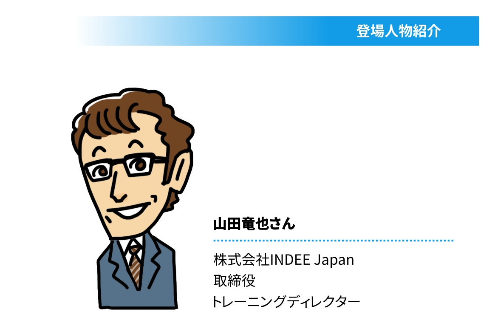

| 組織のなやみ研究所 ： 03 なぜ、イノベーションはむずかしい？ | |
| 株式会社富士ゼロックス総合教育研究所 | |
| 株式会社ユナイテッド・ブックス (2019) | |
ご覧になるリーディングシステムにより、表示の差が認められることがあります。
はじめに
ようこそ！ 『組織のなやみ研究所』へ
企業という「組織」には色々なカタチがあって、現場の数だけ「悩み」があります。
それが、わたしたち『組織のなやみ研究所』の研究テーマです。
今回取り上げる悩みは「イノベーション」。
スマートフォンやVR（仮想現実）、そしてAI（人工知能）。
偉大なイノベーションの数々が、今もわたしたちの暮らしを大きく変えつつあります。
先端技術の領域だけではありません。
効率のよい働き方や学び方を実現するため、社会の至るところでイノベーションがつよく求められています。
社会に生きる誰もがイノベーションについて知り、考えなければならない時代。
あなたの組織ではいかがですか？
イノベーションを起こしたい、でも起こせないのではないでしょうか。
そもそもイノベーションって、なんでしょう。
イノベーションを起こすためには、どんな体制や意識が必要なのでしょうか。
躓きやすいポイントは？
そうした疑問に、この１冊でお答えします。
イノベーション支援の最先端でご活躍される方々に取材を重ね、
イノベーションのすべてをわかりやすくまとめました。
当研究所の研究員とともに、楽しくイノベーションを学んでみませんか。
プロローグ
イノベーションが起こせない!!
スミ子： 組織のなやみ研究所へようこそ！ 研究員のスミ子と申します。
三好社長： はじめまして、Aです。いきなりですが、イノベーションの起こし方がわからないんです！
スミ子： イノベーションについてお悩みなんですね。なぜ、イノベーションを起こされたいのですか？
三好社長： 私は、父が立ち上げた部品製造会社の社長をしています。規模は小さいけど、技術力には自信あります。取引先からも評価いただいているんですが......。最近は業績が下降していまして。
スミ子： 現状を打破するためにはイノベーションが必要だ、ということですね。
三好社長： はい。自分でもビジネス書を読んで、イノベーションについて学ぼうとしています。起こすための社内会議もすでに行っています。でも、成果がちっとも出ません。そんなとき交流会で出会った方から、こちらの研究所を教えてもらいました。
スミ子： 三好社長と同じ悩みを抱える経営者様が、最近増えているんですよ。皆さん、「イノベーションに取り組んでみたものの、成果を得られずに困っている」とおっしゃいます。これはひとえに、イノベーションという言葉だけが独り歩きしていて、その本質が見えにくくなっているせいかもしれませんね。
三好社長： まさにそうなんです。どこにあるかもわからない新大陸を漠然と目指しているような感じで......。イノベーションって結局のところ、一体なんなのでしょうか？ 考えれば考えるほど、わからなくなってきました。
スミ子： まず、基本をおさらいしてみましょう。イノベーションという概念を普及させたのは、20世紀初頭に活躍した経済学者、ヨーゼフ・アロイス・シュンペーターですよね。彼は経済に急激な変化をもたらす新しいやり方を「イノベーション」と呼びました。
スミ子メモ
ヨーゼフ・アロイス・シュンペーター（1883～1950年）
イノベーションといえば、まずこの方。イノベーション研究の祖とされる人物です。シュンペーターは19世紀末のオーストリア・ハンガリー帝国に生まれ、生涯を経済学理論の研究と実践に捧げました。彼のいうイノベーションとは、新たな価値の創造と普及。それこそが資本主義経済を動かす原動力となるのだ、と主張したのです。イノベーションという観点から経済を捉え直した彼の理論は、特にその後の経営学界に巨大な影響を与えました。
三好社長： たしか、イノベーションという言葉が日本へ伝わったときに、「技術革新」と訳されたんですよね。
スミ子： その通りです。1950年代のことですね。ただ、その訳語が適切だったかといえば、どうでしょう。当研究所では、イノベーションを次のように考えています。
＜イノベーションとは...＞
①イノベーションとは新しい価値を創造することである。そこにはさまざまな形があり、技術革新だけがイノベーションではない。
②創造した価値が普及あるいは定着してはじめてイノベーションとなる。
③イノベーションは試行錯誤・軌道修正の繰り返しによって成し遂げられる。
三好社長： ①「技術革新だけがイノベーションではない」 。いきなりびっくりです。
スミ子： イノベーションという言葉は、日本では長らく、技術革新の意味で用いられてきました。三好社長も、イノベーションといえば先端技術をイメージされるのでは？
三好社長： ええ、そうです。特にわが社はものづくりが専門ですから、画期的な技術を開発して、それをもとに新事業を立ち上げたり、新製品を開発できればと考えていたりしています。
スミ子： それもたしかにイノベーションではありますが、あくまで狭義のイノベーションなんです。新たな価値を創造する、という点がもっとも大事です。価値には、事業や製品、制度などさまざまなものが含まれます。
・技術革新をともなわない新製品の開発
・新市場の開拓
・組織の改革や新しい制度の導入などによって社内外に新しい価値を創造すること
これらもイノベーションであると、私たちは考えています。
三好社長： なるほど！ 思っていたよりもずっと幅広いものなんですね。新しい働き方をつくり出すこともイノベーションなのか。では、②「普及・定着しなければならない」 については？
スミ子：
イノベーションの目的は、起こすことそれ自体ではありませんよね。イノベーションによって利益を得る。それが最終目的のはずです。それを達成するには、イノベーションによって生まれた新しい価値が、社内や取引先、世間に定着・普及しなければ意味がない
んです。そうでなければ利益が生じませんからね。
ところが、いざイノベーションに取り組もうというときに、「新事業や新製品をどう定着・普及させればいいのか」という部分をきちんと考えず、見切り発車している企業が案外多いのです。
三好社長： 何か目新しいことをはじめなければという点ばかりに気を取られて、それをどう続けるのか、どう広めるかには考えがおよんでいませんでした。斬新ではあるけどまったく評価されなかった、というのはイノベーションではないんですね。
スミ子： ③「試行錯誤や軌道修正の繰り返しで成し遂げられる」 は、イノベーションがうまくいかなかった企業にヒアリングして得た教訓です。「1回やってダメだったのでプロジェクトを中止した」というお話をよく聞くんですよ。そして、「だから今は別のイノベーションに取り組んでいる」とおっしゃるんですね。でも、そうしたやり方をしていると、新しいプロジェクトが次々と生まれる反面、形になるものはひとつもなく、社員が疲弊しただけで終わり......という結果になりかねません。特に経営者は、イノベーションは一発勝負ではなく徐々に形にしていくもの だと理解しておくべきです。
三好社長： 耳が痛いです。ただ、おかげさまでイノベーションの本質へまず一歩、近づけた気がします。誰もが驚く新技術じゃなくてもイノベーションと呼びうる。でも、イノベーションを起こすには試行錯誤と、普及のためのしっかりした計画が不可欠。うーん。旗振り役の私がこんなに不勉強で、わが社にイノベーションなんて起こせるのか不安ですが......。
スミ子：
ご心配なく、私どもがしっかりサポートしますから。
ご説明したように、イノベーションは闇雲に起こせるものではないんです。イノベーションをもっと深く理解していただくために、最新のイノベーション事情に詳しい方とお話してみませんか？
三好社長： 願ってもないことです。ぜひ、よろしくお願いします！
イノベーションについて、基礎から学びたいという三好社長。そこでまず、株式会社INDEE Japan取締役の山田竜也さんにお話を伺うことになりました。INDEE Japanは、イノベーションに挑戦する企業の支援をミッションとしています。クレイトン・クリステンセン教授によるInnosight社は、イノベーションの分野ではあまりにも有名な企業。INDEE Japanはその公認パートナーでもあるんです。さあ、どんなお話が聞けるでしょうか。

１ 知っておきたい
「イノベーションのジレンマ」
スミ子： こちらの山田さんは、イノベーションに関するセミナーやワークショップを何度も開催されてきた方です。イノベーションの最新定義やチームづくりの注意点などについて、手取り足取り教えてくださるはずです。わからなくなったら、いつでも遠慮なく質問してくださいね。
三好社長： 今日はよろしくお願いします！
山田： こちらこそ、よろしくお願いします。早速ですが、三好社長はすでにイノベーションへの挑戦を、ご自分で始められているそうですね。
三好社長： はい。社内でイノベーションのためのチームを結成したものの、まず、新しいアイデアがなかなか出てきません。何度かこれはというアイデアが出ても、その後プロジェクトが軌道に乗らず、どれもいつのまにか立ち消えになってしまいました。社員のやる気がないわけでもないのに......。何がいけないんでしょうか。
山田： まずは、御社が置かれている状況を整理してみましょうか。図１ を見てください。
山田： これは、クレイトン・クリステンセン教授が唱えた「イノベーションのジレンマ」の概念を表わした図です。持続的イノベーション、破壊的イノベーションという用語については後ほど説明します。ここではとりあえず右上へ伸びる青い線と赤い線に注目してください。実は、この図で示している状況が、今まさに自動車業界で起こりつつあるんです。
スミ子メモ
クレイトン・クリステンセン（1952年～）
現代におけるイノベーションの世界的権威といえば、クレイトン・クリステンセン教授でしょう。『イノベーションのジレンマ』（1997年）で提唱した「破壊的イノベーション」理論が特に有名です。その後も「ジョブ理論」など、画期的な研究を数多く発表しています。彼は米ハーバード大学ビジネススクールで教鞭をとるかたわら、ビジネスマンとして、経営コンサルティング会社Innosightの経営にも携わっているとか。山田さんが所属するINDEE JapanはInnosight社のパートナー。教授の理論について教わるのに、うってつけの方ですね。
三好社長： そうなんですか！？
山田： これまで自動車部品は金属製が主流でした。そうした金属部品を製造する会社が、図の青い線に相当します。金属部品製造会社は、顧客、つまりは自動車メーカーの要望に応える形で、製品を改良して性能向上に努めてきました。ところが、ある時点で性能が顧客の消化できる水準を上回ってしまいます（図1 のポイントA ）。すると、どうなるか。顧客から「これ以上の性能はうちには必要ありませんから、性能を向上させる代わりに価格を下げてください」と言われてしまうわけです。
三好社長： どんなに改良しても、結局は「値下げして」という話になっちゃうんですよね。
スミ子： そうなったら、思い切って別の顧客を探せばいいのではないですか？ 製品の性能がそれほど高いのなら、高い技術力を評価してくれる顧客もあると思うんですけど。
山田： それもひとつの選択肢ではあります。けれど、金属部品製造会社の立場に立って考えてみると、「その顧客の要求に応えなくてはと、ずっとがんばってきたんだから、今さら別の顧客に替えたくはない」という心理がまず働きますよね。
スミ子： そうですね。顧客が変われば要求も変わるでしょうし。
山田： そうした心理に打ち克って、別の顧客を探す決断をしたとしましょう。この場合、必然的にさらにニッチな市場で戦うことになり、顧客の数が限られてきます。そのなかから運よく新しい顧客を見つけられたとしても、製品の性能が顧客の求める水準を超えてしまうタイミングが再び訪れます。そのとき、別の顧客をもう一度見つけられるかどうか。
三好社長： 難しいでしょうね。ジリ貧になってしまう可能性が高そうです。
山田： 後発組の市場への参入も無視できませんよ。今、自動車業界では、樹脂をはじめとする新素材で部品をつくる企業が台頭しつつあります。新素材部品が市場に登場した当初、金属部品をつくっていた先発組は「金属部品が新素材部品に取って代わられるはずがない」と思っていました。事実、メーカーも新素材部品は金属部品に比べると耐久性や安全面に不安があるとして採用しませんでした。だから、先発組は新素材部品に見向きもせず、金属部品の改良を続けたのです。
三好社長： まるでわが社のことを言われているようです......。
山田：
製品の改良を続けることが悪い、と言っているわけではありませんよ。ただ、既存製品だけに目を向けていると、クライアントの新しいニーズに気づけなかったり、新興市場への参入が遅くなったりしがちなんです。そうこうするうち、図１
のポイントB
に至ります。気がついたときには後発組の製品が顧客が望む性能水準を超えており、市場が後発組の製品によって席巻されているわけです。
そこでようやく慌てて「今のままではダメだ。うちも新しい事業を始めなければ」と動いても、後発組に大きく遅れをとってしまっていますから、事態を逆転するのは難しいでしょうね。これがイノベーションのジレンマ
なんです。
自動車業界の市場では今まさにイノベーションのジレンマが起きつつあります。メーカーが「新素材部品のほうが金属より軽いから燃費も向上するし、価格も安い」と、新素材部品に注目しはじめている。
スミ子： イノベーションのジレンマは、自動車業界だけでなく、あらゆる業界に当てはまる話ですね。
山田： ええ。業種や企業の規模にかかわらず起こる可能性があります。とはいえ、繰り返しになりますが、性能の向上を追求すること自体が悪いわけではありません。図１で青い線＝持続的イノベーション となっていることからもわかるように、製品の改良もイノベーションのひとつの形なんです。
２ 持続的イノベーションと
破壊的イノベーション
三好社長： イノベーションなんて自分とは無縁だと思っていました。でも、わが社がこれまでやってきた、顧客の要望に応えて既存商品を改良していくことも、実はイノベーションだった、ということですよね。
山田： そうです。イノベーションは３タイプに分類できます。今おっしゃったような形のイノベーションは「持続的イノベーション 」と呼びます。持続的イノベーションを追求して、ニッチ市場のなかでトップを勝ち取れる製品をいくつか持つというのも、経営戦略としてはアリです。
スミ子： ただしリスクもある、と。
山田： ええ。リスクのひとつは市場の狭さです。お話ししたように、市場がニッチになれば顧客が限定されますし、市場自体がなくなる可能性まであります。それと、持続的イノベーションだけを行っていると、いざ新しい取り組みを始めようと思ってもなかなかうまくいかないケースが多いんです。
三好社長： なぜでしょうか？
山田： 会社全体に「お客様の声を聞けばいいものがつくれる」「いいものをつくれば売れる」という神話が浸透しているから、新しい取り組みを始めようとしてもそちらに気持ちが向かず、つい既存製品に注力してしまうんですね。既存製品と新規製品をひとつの会社のなかで共存させるのは、かなり難しいことです。そもそも10年、20年と持続的イノベーションだけをやってきた企業には、新しい何かを企画して動かせるような人材がまったくいなかったりします。
三好社長： うちがまさにその状況です。ところで、図１ には持続的イノベーションの下に「破壊的イノベーション 」と書かれています。先ほどの自動車業界の話でいうと、持続的イノベーションが金属部品の製造会社だとしたら、新素材で市場参入した後発組は「破壊的イノベーション」になりますね。わが社もできれば持続的イノベーションから破壊的イノベーションにシフトしたいのですが、どうしたらいいのでしょうか？
山田： 破壊的イノベーションは、ローエンド型 と新市場型 の２つに分けられます。自動車業界で考えてみましょう。金属部品の改良を重ねた結果、顧客が望む以上の性能を持つようになりました。性能が高くなった分、コストや価格も高くなりますよね。そうなったとき、「高すぎる。そんなに高性能じゃなくていいから、もっと安い部品があれば使いたいんだけどなあ」という層も一定数存在すると考えられます。そうしたローエンド層に向け、必要十分な性能におさえて価格破壊的な製品を投入するのがローエンド型破壊的イノベーション です。
三好社長： 樹脂をはじめとする安価な新素材で自動車部品をつくっている後発組は、ローエンド型の典型というわけですね。
山田： その通りです。持続的イノベーションからローエンド型破壊的イノベーションにシフトするのは少し難しいかもしれません。というのも、持続的イノベーションを得意とする企業の取引先は、コストや価格が多少高くても製品を採用できるハイエンドな企業であることが多いのです。そうした企業との取引に比べると、ローエンド市場への参入は利益率が低く、魅力を感じにくいですから。
三好社長： わかるような気がします。
スミ子： 新市場型というのは、どのようなものなんですか？
山田： 持続的イノベーションに代表されるような主流の市場を席巻している製品に比べると、求められている性能が劣るかもしれないけれど、これまでにない新しい「価値」を提供することで、新規の市場を形成するスタイルを「新市場型破壊的イノベーション」といいます 。
三好社長： 新しい市場をつくれるとしたら、経営者にとってこれほど魅力的な話はありませんね。どんな価値を提供すればそれが可能になるんでしょう、具体例はありますか？
山田： たとえば、最近、自分の車体をモニターで真上から見ることのできる車が増えていますよね。
スミ子： アレ、駐車するとき便利なんですよね。
山田：
あの全方位カメラシステムは、まさに新市場型破壊的イノベーションといえます。技術的には開発途上かもしれませんが、従来のバックミラーやサイドミラーにはない、「車を真上から見られる」という新しい価値を提供しています。
今では、ほとんどの自動車メーカーが全方位カメラシステムを搭載した車両を発表しています。そのうち、全方位カメラシステムがバックミラーやサイドミラーに取って代わるのではないでしょうか。もしかしたら、その頃は自動運転が普及して、周りを確認する必要自体なくなるかもしれませんが。
三好社長： みんなが昔ながらのミラーで我慢していたところに、全方位カメラシステムというこれまでにない市場ができたわけですね。
山田： そうです。もうひとつ別の例も挙げてみましょう。おふたりはGoProというカメラをご存じですか？
三好社長： 聞いたことはあります。スポーツなんかを臨場感たっぷりに撮影できるカメラですよね？
スミ子： 従来のカメラよりずっと小型で、海外発だったような。テレビでもGoProによる映像をよく見かけるようになりましたね。
山田： 手のひらにすっぽりと収まる小型カメラをヘルメットや衣服などに装着して、アクションシーンを撮影できるというものです。これまでのカメラは、簡単に言えば、「いかにキレイな写真を撮れるか」を追求して改良が行われてきました。では、そうしたカメラを購入するのはどんな人たちでしょうか？
三好社長： 写真を撮るのが好きな人ですかね。
山田： ですよね。けれど、GoProの場合はちょっと違うんじゃないかと思うんです。GoProは、スポーツギアやウエアに装着することで、スノーボードのような激しいスポーツをしながらの撮影が可能です。そのため、エクストリームスポーツが好きな人たちの間で特に人気となっています。彼・彼女たちは、「写真を撮るのが好きな人」というよりは、「エクストリームスポーツを格好よくプレイする自分の姿を撮られるのが好きな人」だと考えられます。
三好社長： そうか、GoProは「撮られるのは好きだけど、撮るのはあまり興味がなかった人」を対象に、新しい市場をつくったんですね。
山田： そうなんです。同時に、「激しいスポーツをしながら写真を撮れる」という新しい価値も提供しています。GoProの性能がもっと高くなれば、写真を撮ることが好きな人たちもGoProへ移行するかもしれません。そうなると、従来の市場は破壊されます。ですから、GoProも新市場型破壊的イノベーションの好例といっていいでしょうね。
３ 顧客の「ジョブ」を
把握するには
スミ子： 三好社長、目指すイノベーションの姿が見えてきましたか？
三好社長： 自分たちがやりたいのは新市場型破壊的イノベーションだとはっきりしました。それを起こす方法についてもぜひ知りたいです。
山田： わかりました。それでは新市場型破壊的イノベーションを起こすポイントを挙げてみましょう。まず大切なのは、顧客の「ジョブ 」を把握し、それを解決することです。
三好社長： ジョブ？ 職業......ですか？
山田： 新しい市場をつくるということは、新しい顧客を対象にするということです。では、新しい顧客の心をつかむにはどうすればいいのか。ごく当たり前の話ですが、新しい顧客についてわかっていなければ、心をつかむ提案はできませんよね。顧客が抱えている問題は何か。課題は何か。本当にやりたいと思っていることは何か。それがジョブです。
スミ子： 先ほどのカメラの例でいうと、顧客のジョブとは何でしょうか？
山田： 従来のカメラは、画質をより高くする、手ブレ補正機能をつける、といった方向に改良されてきました。これは、写真を撮るのが好きな人たちが抱える「もっときれいな写真を撮りたい」「手軽にプロ並みの写真を撮りたい」というジョブを解決するためですよね。では、GoProを購入した人たちのジョブは何か？ 三好社長は何だと思いますか？
三好社長： そうですね......。GoProを実際に使っているのは「エクストリームスポーツを格好よくプレイしている自分の姿を撮られるのが好きな人」。だとすると、「『すごいトリック（技）を決めた瞬間の俺』『日常では滅多に見られない光景に出会っている瞬間の私』を、写真を通じて見て欲しい」というのがジョブになるでしょうか。
山田： その通りだと思います。今までのカメラでは、そのジョブはなかなか解決されることがありませんでした。「トリックを決めた俺」「日常では見られない光景に出会っている私」を写真で伝えようと思ったら、撮影が上手な誰かに、常にカメラを構えていてもらわなければいけなかったわけですからね。
スミ子： 一方、GoProがあれば自分ひとりで撮影できますね。
山田： さらには共有しやすさも重要です。皆さんもデジカメの写真を共有しようとして「めんどくさい、やっぱりスマホが一番いい！」と思ったことはありませんか。ジョブを快適に解決するため何が必要かという視点で、製品からサービス全体までをデザインすることが大切です。
スミ子： そうですね。つい自分たちが提供しているサービスの枠内で考えがちですが、それは顧客目線ではない。そこから変えないと新しい顧客は得られないのですね。
山田： ええ。ジョブを見つけて、それに合った製品を創造したからこそ、新しい顧客、つまりは新しい市場を開拓できたと考えられます。
スミ子： そうそう、カメラといえば最近、撮影直後にその場で写真を現像できるインスタントカメラが再び人気だと聞きました。この場合のジョブはなんでしょう。
山田： 「画質はそれほど良くなくてもいいから、その場で友人に渡したい」「ペンやシールで自由にデコレーションしたい」「敢えてアナログにして人とは違うものを持ちたい」などがジョブに当たるのではないでしょうか。
三好社長： それも、従来の画質重視のカメラでは解決できないジョブだったからこそ、ヒットしたんでしょうね。
山田： そうだと思います。基本的にジョブには3種類あると考えています。
＜ジョブの3つの種類＞
①機能的なジョブ
②感情的なジョブ
③社会的なジョブ
山田： 高画質だとか、小型で身につけられるとか、その場で写真を出力できるとかいった欲求が①の機能的なジョブです。これは多くの製品が有しているものだと思います。②は、「パーティーでかっこいいねとほめられたい」とか「みんなで出力した写真を見て盛り上がりたい」といった感情に由来するジョブです。③は、「トレンドに敏感だと思われたい」「気が利くと思われたい」というような、社会的欲求に基づいたジョブです。
三好社長： 車でもありますね。「ベンツのSクラスに乗っているとステイタス」みたいな。
スミ子： たしかに。最近、エシカルな（倫理・道徳的に正しいとされる）製品に注目が集まっているのは、きっと②と③を満たしてくれるからですね。
山田： そうです。日本のようにあらゆる製品の高機能化・高性能化が進んでいる社会においては、①を満たしてくれる製品はもはや珍しくない。だからこそ、②の感情的なジョブや、③の社会的なジョブにまで踏み込んだ製品をつくらないと、消費者になかなか選んでもらえません。さらに言うなら、顧客のジョブを把握してそれを解決する製品をつくることは、イノベーションの必須条件といえます。
三好社長： どういうことですか？
山田： イノベーションは、なにか革新的なものを生み出すだけでは不十分でしたよね？
三好社長： はい。持続して、普及して、はじめてイノベーションといえるのだとスミ子さんから聞きました。
山田： どれほどすばらしい技術革新であっても、それが市場に出なければ意味がないし、社会に何の影響も与えられなければ、やっぱり意味がありません。発明と普及。この2つが揃い、社会に良い変化をもたらしてはじめてイノベーションとなるのです。
三好社長： わが社のようにものづくりをしている会社は、「発明」の部分にばかり、目が行きがちかもしれません。
山田： 「発明」は「モノ」、つまりは科学技術に対する洞察が優れていれば実現できます。けれど、それを普及させるには「コト」、要は「人」に対する洞察が欠かせない。人にどうやったら受け入れてもらえるのか。購入してもらえるのか。それがわからないと普及は難しいんです。
スミ子： だから「ジョブ」が大事なんですね。
三好社長： ただ、そのジョブをどうやって見つけるのか......。そこが問題ですよね。
山田： 続いては、ジョブを見つける方法を考えていきましょうか。ジョブは市場を漠然と眺めていてもまず見つかりません。はじめに、どの消費者をターゲットにするか決めましょう。消費者は大きく次の5つのタイプに分けられます。
＜消費者のタイプとその特徴＞
①イノベーター
新しいものが好きな消費者。新製品を進んで買う
②アーリーアダプター
トレンドに敏感で、能動的に情報収集を行い、新製品を自らの判断で買う消費者。オピニオンリーダー、インフルエンサーとも呼ばれ、ほかの消費者への影響力が強い
③アーリーマジョリティ
新製品に対しては比較的慎重な態度をとるが、最終的には平均よりも早く購入する。値ごろ感を気にして合理的に判断する
④レイトマジョリティ
新製品には比較的懐疑的で、大半の人が購入してからようやく「みんなが使っているのなら......」と自分も購入する
⑤ラガード
トレンドや世間への関心が薄く、保守的。伝統を重んじるため、イノベーションが伝統になってようやく購入する
三好社長： わかりやすいですね！ 私は完全にレイトマジョリティです（笑）
スミ子： 私はアーリーマジョリティかな。
山田： イノベーターとアーリーアダプターは市場全体に16％しかいないといわれています。どのタイプの消費者を対象とするかで、目指すイノベーションのタイプも変わってくるんですよ。たとえば、スミ子さんのようなアーリーマジョリティを対象にするとしましょうか。アーリーマジョリティの人たちは、価格や機能を比較してどの製品を購入するかを合理的に判断します。だとすると、アーリーマジョリティに選ばれる製品をつくりたいと思ったら、どんなイノベーションが必要でしょうか？
三好社長： アーリーマジョリティは市場に出てすぐの製品には飛びつきませんから、必要なのは、新市場型破壊的イノベーションではなく、持続的イノベーションではないでしょうか。
山田： 正解です。さて、三好社長は持続的イノベーションではなく、破壊的イノベーションのなかでも新市場型にシフトしたいという話でした。その場合、どの消費者のジョブをつかめばいいと思います？
三好社長： 新市場型破壊的イノベーションを目指すなら、やはり、イノベーターとアーリーマジョリティですよね。
山田： その通りです。
三好社長： わが社は長年、持続的イノベーションを行ってきました。そのせいかどうかはわかりませんが、流行に敏感な社員がいなくて......。そんな状況であっても、イノベーターやアーリーアダプターといったトレンドの先端を行く人たちのジョブを把握できるのでしょうか。
スミ子： 三好社長の会社に限らず、市場に16％しかいない人たちのジョブを把握できる人材は、そう簡単には見つからない気がします。
山田： そうした人材を探すのであれば、わが社が提供している「イノベーターDNA診断」がお役に立てるかもしれません。イノベーターとは、イノベーションを起こすために必要な人材を指します。
山田： 「イノベーターDNA診断」では、
・イノベーションに必要な発見力は高いけれどビジネスを継続して実行する力は低い「イノベーター」
・発見力と実行力をバランスよく兼ね備えた「デベロッパー」
・発見力こそ低いものの強い実行力を持つ「エクゼキュータ」
という具合に、テストを受けた人の資質がわかります。
さきほどの消費者タイプでもイノベーターという言葉が出てくるのでややこしいですが、イノベーターDNA診断における「イノベーター」の発見力には、市場に16％しかいないといわれるイノベーターとアーリーマジョリティのジョブに気づく力が含まれていると考えてください。
三好社長 ・スミ子 ： たしかにややこしい（笑）
山田： ちなみに、エクゼキュータは大企業の課長や部長タイプ。既存事業を計画通りに遂行していけるので、日本企業では高い評価を得やすいタイプといえます。一方、イノベーターは、「たまにヒットも出すけど、ふらふらしていて何をしているのかわかりにくい、少し変わった人」という評価を受けるることが多いようです。
スミ子： います、うちの研究所にもそういう「少し変わった人」が！ 所内での評価は必ずしも高くないけれど、実はイノベーションに必要な人材かもしれないんですね。
三好社長： 新市場型破壊的イノベーションを目指すなら、チームにイノベーター気質の人材を入れるといいんですね。社員にも早速診断を受けさせます！
４ イノベーション体質を
つくる４要素
スミ子： 三好社長、せっかくですから、イノベーション成功の秘訣を山田さんに聞いてみませんか？
三好社長： それはぜひ教えていただきたい！ 「これだけは押さえておきたいポイント」はありますか？
山田： 図５ を見てください。これは、企業がイノベーションを成功させるうえで必要な要素を示しています。どれが欠けてもうまくいきません。
三好社長： まず、「リーダーシップ・人材・風土 」ですが、人材選びはもちろん、どんなチームをつくり、誰がどのように率いるか、という解釈で合っていますか？
山田： はい。「風土」には、チームの規模だとか雰囲気だとか、そういうものも含むと考えてください。ところで三好社長は「2枚のピザ理論」をご存じですか？
三好社長： 業務効率に関係する法則だったような......すみません、わかりません。
山田： イノベーションに限りませんが、チームづくりでは多様性が大切です。イノベーションのためのチームだからといって、イノベーターDNA診断でイノベーターと診断された人だけを集めてもうまく行かない可能性大です。イノベーターは発想力がある一方で実行力は低いことが多く、イノベーターのみの集団では、事業を継続できない恐れがあるからです。
三好社長： さきほどのイノベーターDNA診断でいう「イノベーター」に加えて、「エグゼキューター」「デベロッパー」も入れたほうがいい、と。
山田： はい。でも、だからといって人数を増やせばいいというわけでもないんですね。「船頭多くして船山に上る」という言葉があるように、人数が多すぎると、それはそれでうまくいかなかったりするんです。
スミ子： わかる気がします。最初は数人だったのに、営業が必要だ、今度は経理がいる、やはり総務もいないと......という具合にどんどん大所帯になって、決断や実行のスピードが落ちてしまうケースってありますよね。
三好社長： 大企業は特にそうなりやすいでしょうね。
山田： ええ。そのせいで意見が言いにくくなったり、意思統一が難しくなったり、各自の役割が曖昧になったりして、最終的にはプロジェクトが尻すぼみになります。こうした事態を防ぐにはどうすればいいか。米アマゾン社CEOのジェフ・ベゾス氏は、「生産性の高いチームの人数は、2枚のピザでお腹一杯になるくらいの人数で十分だ」という主旨の発言をしています。つまり5～8人ですね。これが「2枚のピザ理論」です。
三好社長： なるほど。メンバー構成だけでなく、規模もよくよく考えないといけませんね。
スミ子： 山田さん、それでは「成長のブループリント 」というのは......？
山田： 簡単に言えば、「いつまでに、どれくらいの規模の新事業を立ち上げなければいけないのか」という青写真を作成することです。たいていの企業は既存事業を維持しつつ新規事業を進めることになりますから、新規事業だけでなく、既存事業も含めた戦略を立てなくてはいけません。
三好社長： なるほど。「ガバナンスとコントロール 」についても解説をお願いします。
山田： イノベーションを俯瞰して見渡すための仕組みづくりです。たとえば、新規事業のアイデアが出たとき、誰が最終判断をするのか？ そして、判断する際の基準は何に拠るか？ イノベーションの成否を誰が、いつ、どのように評価するのか？ こうした「統制」と「制御」の仕組みをきちんとつくっておくことも、イノベーティブな企業であるためには大切です。おふたりの組織でもありませんか？ 現場からいいアイデアが出ても上が正当に評価できなかったり、判断基準が固まっていないせいでダメ出しの応酬になり、結局すべてボツになったりすることが。
三好社長 ・スミ子 ： ありますね......。
山田： イノベーションの経験やノウハウがない経営陣は、既存事業を基準に物事を考えてしまう。「既存事業ではこうだったから、新規事業もこうなるはずだ」という具合に。そして、イノベーションの芽をつぶしてしまうんです。
三好社長： 経営者である私にイノベーションの経験や知識がないので、つい、既存事業をベースに判断していました。
山田： 既存事業では数年先までのプランがある程度決まっています。予算配分をするにしても製造、マーケティング、営業それぞれにどれくらい振り分ければいいか、予測が立ちますよね。でも、新市場型破壊的イノベーションは既存事業とはまったくの別物です。何をつくるのか、誰に売るのか、どうやって儲けるかから考えないといけない。勘定科目ごとの予算なんて組みようがないでしょう。アイデア段階であればなおさらです。その点をわかっていない企業がとても多いんです。
三好社長： うちの会社ではこれまでに何度かイノベーションのためのアイデアコンテストをやっています。なかなかいいアイデアが出てこないので、ずっと悩んでいました。ですが、実はいいアイデアも出ていたのに、思考や判断が既存事業ベースになってしまっていた私には見抜けなかった、というのが本当かもしれません。
山田： 「イノベーションを起こせ！」とアイデアコンテストをやる企業はたくさんあるんですよ。はじめは社員も張り切って参加するんだけど、上がダメ出ししかしない。それで社員は「何のためにアイデアコンテストをやっているんだろう？」「アイデア段階で重箱の隅をつつかれてもねえ」と途方に暮れてしまう。やがてコンテスト自体が中止になって、というのがよくあるパターンです。
スミ子： そのほかにも、「既存事業と新規事業は別物だ」という点を理解していない企業がやりがちなことってありますか？
山田： そうですね、たとえば三好社長は、イノベーションのためのチームをつくるとき、優秀な社員に既存事業と新規事業を兼務させたりしませんでしたか？
三好社長： たしかにやらせました。既存事業の戦力を削ってしまう勇気が出なくて。優秀な人材でしたし......よくないことなんでしょうか。
山田： さきほどの「イノベーターDNA診断」からもわかるように、一口に「優秀」といっても種類が違うんです。エクゼキュータとして優秀な人が、イノベーターとしても優秀だとは限りません。また、どれだけ優秀な人でも、既存事業と新規事業の掛け持ちは難しいでしょう。どうしても既存事業の考えに引っ張られてしまいますから。
三好社長： とすると、新規事業は専任メンバーでチームをつくって、予算も上限内であれば自由に使えるようにすべきなんでしょうか。
スミ子： それはそれで既存事業に携わっている社員から不満が出そうですよねえ。「あいつらばっかり自由にやっていいよなあ」みたいに。
山田： 鋭いですね（笑） 既存事業を担当している社員が不満に思うのは理解できます。今現在、会社を支えているのは既存事業なんですから、そこに従事している社員の意見を無視するわけにもいきません。だとすれば、新規事業を思い切って別会社化するぐらいのほうが成功しやすいでしょうね。そこまでは無理だとしても、新規事業固有の組織や開発プロセスは絶対に必要です。そして、この新規事業固有の組織や開発プロセスこそが、図５ の4つめの要素「創造システム 」なんです。
三好社長： イノベーションにおいて、「リーダーシップ・人材・風土」「成長のブループリント」「ガバナンスとコントロール」「創造システム」は三位一体ならぬ、四位一体なんですね。
山田： その通りです。企業は単に一度きりイノベーションを起こしただけでは不十分です。継続的にイノベーションを起こせる体質に仕上げなければいけません。そのために必要なのが、その四位一体です。
５ 「ありたい姿」から
ブループリントを描く
三好社長： ひとつ疑問があるんです。「リーダーシップ・人材・風土」も「ガバナンスとコントロール」も「創造システム」も、目標や方向性がなければ整えようがありませんよね。だからこそ「成長のブループリント」が図中央に配置されているのだと思うんですが、だとすれば、「成長のブループリント」はどうつくったらいいのでしょうか？
山田： それについては、「Future Back 」が参考になると思います。アプローチは、未来の「ありたい姿」をまず描いて、そこへ到達するまでの事業ポートフォリオ（自社事業間の資源配分）とプロセスを計画する方法です（図6 ）。
山田： たとえば三好社長の主力製品、つまり図6 でいうところの既存事業が、競合他社が仕掛けた新市場型破壊的イノベーションによって追いやられつつあるとしましょう。市場が競合製品に完全に取って代わられるまで、あと10年ぐらいはかかりそうです。この場合、10年後の御社の「ありたい姿」とは何でしょう？
三好社長： 10年後には、既存事業の売り上げはほとんど見込めない、ということですよね。とすると、「10年後には、既存事業に替わる新しい製品が売り上げの中心となっている」というのが「ありたい姿」になるでしょうか。
山田： そこから逆算すると、5年後には主力製品と新製品による売り上げの比率は5：5ぐらいになっているのが理想で......という具合に、既存事業と新規事業のポートフォリオが見えてきますよね。
スミ子： それによって人材だったり、予算だったりの配分も決まってきますね。
山田： はい。Future Backアプローチでは、目標設定や目標達成のためのプロセスは、既存事業と新規事業ではまったくの別物として、分けて考えるべきだとされています。
三好社長： なるほど。早速、わが社の「ありたい姿」を描いて、新市場型破壊的イノベーションのためのチームを組んでみます。おふたりとも、ありがとうございました！
スミ子： お役に立ててよかったです！ でも、ちょっとお待ちください。イノベーションのエキスパートをもうひとりご紹介しますから。
続いてご紹介するのは、株式会社ABテクノロジーの奈良崎さんです。これまで数々のイノベーションに携わってこられた奈良崎さんは、イノベーションには５つの困難がある、と言います。いったいどんな困難なのでしょうか。その克服法も、もちろんお伺いしていきますよ。
１ イノベーションの壁①
チームビルディング
スミ子： イノベーションに取り組む前に、どの段階でどんなリスクが考えられるか、知っておけたら安心ですよね。こちらは奈良崎さんです。大企業のイノベーションチームへの参加経験を豊富にお持ちで、失敗に終わったプロジェクトも多数見てこられたそうです。三好社長の参考になるお話をたくさん聞けると思いますよ。
三好社長： よろしくお願いします！ 早速ですが、奈良崎さんはどのようなイノベーションに携わっていらっしゃったんですか？
奈良崎： そうですね、詳しくはお話できないのですが......たとえば、あるメーカーの電子デバイスには、開発当初から関わっていました。手軽に情報共有するためのデバイスで、発売以来改良を重ね、現在もさまざまな現場で使われているんですよ。
三好社長： そのメーカーにとって、電子デバイスの開発は新たな挑戦だったのでしょうか。
奈良崎： そういえると思います。私はどちらかといえば、新規事業領域の製品開発に携わる機会が多いかもしれません。
三好社長： 既存事業とは違う新規事業の領域でイノベーションを起こすにあたり、苦労されたことはありますか？ うちの会社もイノベーションに力を入れようといろいろやってはいるんです。でも、さまざまな壁にぶつかってしまいまして......。
奈良崎： よくわかります。私は、既存事業を有する企業でイノベーションを起こす場合、主に5つの壁があると考えています。どんな壁があるかをあらかじめ知っておけば、今後イノベーションを進めるうえで役立つこともあるかもしれません。順に説明していきますね。
三好社長： お願いします！
奈良崎： 5つの壁のうち、最初にぶち当たるのがチームビルディングの壁です。イノベーションを起こすには、イノベーションのタネ、つまりは新規事業のタネを考えつける人が絶対に必要です。
三好社長： INDEE Japan 山田さんの話にあった、「イノベーターDNA診断」での「イノベーター」ですね。
スミ子： さすがです。発見力は高いけれど、実行力はそれほどでもないタイプでしたね。
奈良崎： とはいえ、タネをつくる人だけ集めてもプロジェクトは進みません。タネを市場に出荷できるレベルまで育てる人や、売り方を考える人、その後の運用体制を考える人など、得意分野が違うさまざまなスタッフを集めなくてはいけない。それができるかどうかが、最初の関門なんです。
三好社長： 私もまず、そこでつまずきました。そもそも、社員がイノベーションに乗り気じゃないんですよ。メンバー入りを打診すると嫌がる社員もいまして。イノベーションと言えば、もっと乗り気になってくれると思っていたんですけどねえ。
奈良崎： 既存事業である程度の売り上げがある企業が、新規に事業を起こそうとした場合、社内で協力者が見つからないケースは珍しくありませんよ。「今の事業で収益が出ているんだから、わざわざ新規事業なんてやらなくても......」というのが社員の本音でしょう。三好社長の場合にはあてはまらないでしょうが、企業によっては、新規事業のプロジェクトが経営陣の承認を得ない状態でスタートすることもありえます。そうなれば会社のバックアップが望めませんから、状況はますます厳しい。社員が及び腰になるのも仕方ないといえます。
スミ子： そうはいっても、メンバーが集まらなければどうしようもありませんよね。何か解決策はありますか？
奈良崎： 結局は、推進役が社内にどれだけ人脈があるかに尽きる かと思います。ほとんど面識がないレベルの人を、プロジェクトに参加してくれるよう説得するのは難しいでしょう。新規事業のように当たるかどうかもわからないプロジェクトであればなおさらです。だからこそ、「あの人だったら......」と思い浮かぶ人が何人いるのかが重要になってきます。
三好社長： うちぐらいの規模であれば、社員全員が顔見知りなので人脈をつくるのは難しくないですが、大企業だとそうはいかないんでしょうね。
奈良崎： 信頼できる人の人脈に頼るのもアリかもしれません。「私は直接知らないけれど、この人が推薦してくれるなら大丈夫」という具合です。
スミ子： メンバーを集めるときは、まず社内に幅広い人脈を持っている人へ声をかけるといいかもしれませんね。
三好社長： 私自身も社員ともっと積極的にコミュニケーションをとるようにします。
スミ子： ところで、イノベーションに向いている人材を見極める方法として、INDEE Japanの山田さんからは「イノベーターDNA診断」を教えていただきました。奈良崎さん流の〝イノベーションに向いている人〟の見分け方があれば教えてください。
三好社長： それはぜひ聞きたいです。
奈良崎： うーん、難しい質問ですね。強いて言うなら、「人と同じ行動ができない人」でしょうか。あとは、「このプロジェクトは絶対にやらなきゃいけない」と思ったら、やらずにはいられないタイプとか。いずれにしても、「仕事は仕事だから」と割り切ってやるタイプの人は、イノベーションには向かないかなと思います。
三好社長： 言い換えると、人の期待に添って行動するよりも、自分なりの判断軸で動いちゃうタイプのほうがイノベーション向きということでしょうか。
奈良崎： そうそう。新規事業というのは、組織のバックアップを期待できない状況でスタートするケースが多いのです。そのため、「なんでそんなことをやっているんだ」とか「利益が出ないならさっさと中止しろ」といった反発を受けやすい。そうしたなかでプロジェクトに参加するわけですから、自分の判断軸で動けるタイプじゃないと難しいでしょうね。「自分の判断軸で行動できる」という資質は、新規事業の初期段階に関わるメンバー全員に共通して必要 だと思います。
スミ子： タネをつくる人の見分け方はありますか？
奈良崎： タネをつくる人は、やはり人と視点が違う人でしょう。その点でいうと私は凡人です。タネをつくる人のアイデアを聞くたびに、「ああ、自分にはこれは思いつけないな」と感じます。
三好社長： とすると、奈良崎さんはどういうタイプなんでしょうか？
奈良崎： タネをお客さんのところまで持っていく道筋をつくる人、でしょうか。プロジェクトの最初から終わりまでを見通して、何が起きるか、リスクの多寡がどれくらいかを予測し、それに基づいて動くのが私の役割だと思っています。
三好社長： タネをつくる人はもちろん、適任者を口説ける人、全体を俯瞰できる人など、構成をよく考えてメンバーを決めないといけませんね。
奈良崎： プロジェクトのフェーズごとに必要な人材も変わってきますから、最初から最後までメンバーを固定するのではなく、適宜見直すこともおすすめします。いずれにしても、チームビルディングがうまくできれば、それだけでプロジェクトの成功率はかなり高くなると思いますよ。
奈良崎さん流チームビルディング
・タネを作る人
・人脈がある人
・道筋を作る人
・自分の判断軸で行動できる
・マーケティングができる人
・社内政治に長けた人
２ イノベーションの壁②
アイデアと現実のギャップ
三好社長： イノベーションにマーケティングは必要なのでしょうか。わが社が目指すのは新市場型破壊的イノベーションです。新市場型破壊的イノベーションは、これまでにない新しい市場をつくることですよね？ だったら、既存の市場で調査をしても意味がないのかも、なんて。
奈良崎：
マーケティングは必要だと私は考えています。技術的なイノベーションを起こすとしたら、タネを考えつく人というのは高度な技術や知識を持った、いわゆる〝技術屋〟である場合が多いですよね。
これはあくまでも私の実感として、自分自身が技術屋としての側面が強いから言うのですが、技術屋が考えたタネというのは、そのまま製品化してもだいたいハズすんです。アイデアが「技術ありき」になってしまうからでしょうね。「技術的にはたしかにすごいけど、一体全体、誰がこれを使うの？」という製品に仕上がることが少なくありません。
スミ子： わかる気がします。
奈良崎： 「製品化まではできたけど全然売れなかった」というのも、多くの場合、アイデアのタネの時点で方向性がずれているのではないかと思います。製品が市場に出てから、「あれ？ 想定していたお客さんと違うね」というケースも多いですね。
三好社長： うちも技術力に自信がある分、同じような事態に陥る可能性が高いなあ。そうならないためにも、マーケティングが必要ということですね。
奈良崎： その通りです。ですから、チームビルディングをする際は、市場に詳しかったり、マーケティングが得意だったりする人材も加えるのが理想といえます。
スミ子： そうした人材が見つからない場合はどうしたらいいでしょう。アイデアのタネをつくる人をユーザーのところへ直接連れて行くのもアリですか？
奈良崎： それもひとつの方法だと思います。先ほどお話しした電子デバイスの開発では、私も技術屋を伴って現場に何度も行きました。現場ではこちらが思いもよらない使い方をされて、それによって問題が生じていることも多かった。「なるほど、こういうケースもあるのか」とたくさんの気づきがありましたよ。
三好社長： もう少し伺いたいです。
奈良崎：
その電子デバイスには、ユーザーが正しく使うために必要な、簡単な決まりがあったのです。とても簡単なので、みなさんすぐ覚えて守ってくれるだろうと私たちは勝手に思い込んでいた。でも実際には、使う人の癖や現場の状況によって、決まりは簡単に無視されました。なぜと尋ねれば、「毎日使うのにそんなの気にしていられないよ」と......。
冷静に考えれば、そうした事態がありうるのは予測できたはずです。でも、実際に見るまでは誰も考えなかった。
三好社長： 私も元々は技術屋ですから、奈良崎さんのおっしゃるところはわかる気がします。予測できて当然の事態も、タネを考えつくのに夢中なときはちっとも思い至らないんですよねえ。
奈良崎： ですよね（笑）。技術や知識がある人ほど、イノベーションの技術革新という面ばかりに夢中になって、市場や顧客を置き去りにしかねない。だからこそ、どこかのタイミングで現場へ行って、アイデアのタネと現実にはギャップがあるのだと認識することは、とても重要 ではないかと思います。
スミ子： 同時に、ギャップを埋めるための方策も練らなくてはいけませんね。
三好社長： そうですね。技術ありき、アイデアありきで突っ走るのではなく、現実とすり合わせる作業もしっかり行おうと思います。
３ イノベーションの壁③
プロジェクトのオフィシャル化
三好社長： ほかにはどんな壁があるでしょうか？
奈良崎： チームビルディングの話にも関連するのですが、大企業内で新規事業を進めるうえでもう一人、必要な人材がいるんです。それは社内を説得する人です。組織のバックアップが得られないなか、なんとかメンバーを集められたとしましょう。紆余曲折あったものの、アイデアも固まってきて、市場に出すめどもつきそうだ、という段階になりました。でも、プロジェクト自体が会社に認められていなかったら......？
スミ子： そのまま進めるのは難しいですね。プロジェクトのごく初期の段階なら、課や部といった限られた管轄内で進めることもできるでしょうが、どこかのタイミングでオフィシャルな事業として認められないと、どうしようもありません。
三好社長： それはそうですね。
奈良崎： 大企業であれば、製品化のプロセスにはある程度のフォーマットがあるはずです。その場合、プロジェクトがオフィシャルになり、レールにいったん乗ってしまえば、製品化まではわりとスムーズにたどり着けます。ただ、オフィシャルになるまでが一筋縄ではいかないのです。
三好社長： それがオフィシャル化の壁、というわけですね。そして、それを乗り越えるには社内を説得できる人が必要だと。
奈良崎： その通りです。新規事業のメンバーには、自分の判断軸を持っている人が適任です。ただ、そういう人たちが社内でどのような評価を得ているかというと、「変わり者」と思われている場合が少なくありません。ゆえに新規事業のイメージって、どうしても「変わり者が集まって何かよくわからないことをやってるよ」となりがちなんです。それをオフィシャルにしなくちゃいけないわけですから、それなりの人材じゃないと務まりません。
スミ子： イメージとしては、社内政治に長けている人、という感じでしょうか。
奈良崎： 誰を説得すればいいのか、どう説得したら動いてくれるのか。それをよくわかっている人が必要です。できれば役員クラスだったり、何らかの役職に就いていたりと、社内での発言力がある人が望ましいですね。こう言っては身も蓋もありませんが、まだまだ多くの企業においては、「何を言ったか」より「誰が言ったか」のほうが重要 だったりしますから。
スミ子： 本当に身も蓋もないですね（笑）
三好社長： でも、よくわかります（笑）
奈良崎： 社内を説得する人は、プロジェクトの最初の段階からいる必要はないかもしれません。でもたとえば、プロジェクトをオフィシャル化させるときには絶対に必要です。
４ イノベーションの壁④
軌道修正できない
奈良崎： ここまではプロジェクトの初期から中期に立ちはだかる壁について説明してきました。残る2つの壁は、プロジェクトがそれなりに進行したところで立ち上がってきます。そのひとつめが、「軌道修正ができない」という壁です。
三好社長 ・スミ子 ： どういうことですか？
奈良崎： 大企業においては、製品化のレールに一度乗ってしまえば、製品の完成まではわりとスムーズに進みます。一方で、途中で変更するのが難しいんですね。プロジェクトのメンバーが、「製品の完成前に市場の動向に変化がありました。つきましては、仕様を変えたいので工場のラインをいったん止めてください」と主張したとして、会社側にすんなり聞き入れてもらえるか、という話です。
スミ子： うーん、難しいかもしれません。「今さら何を言っているんだ。このまま進めればいいだろう」と一蹴されてしまうかも。
三好社長： 「こうすればよくなるのに」とわかっていても、修正できないまま市場に出てしまって結局売れず、プロジェクト自体が立ち消えてしまう......。そんな結末が浮かびますね。
スミ子： 本当に。でも、なぜ軌道修正できないんでしょう？
三好社長： その時点でけっこうな資金をつぎ込んでいて、「もう後には引けない」心理が働くからじゃないですか？
奈良崎：
もちろん、それもあるでしょう。ただ、もっと根本的な問題として、製品開発の仕組みが「失敗するかもしれない」「途中で方針が変わるかもしれない」という前提でつくられていないからでしょうね。
最初に仕様をきっちり定めて、それにあわせて必要な予算、人員、期間を決める。それが一般的なやり方でしょう。でも、それだと、途中で方針を変えるのは一大事ですし、仮に変えられるとしても、社内で複雑なやりとりが必要だったりする。だから、「よし、軌道修正をしよう」という判断を下しにくい。多くの企業でそういう仕組みができてしまっているんです。
スミ子： 仕組みは変えられないのでしょうか？
奈良崎： 企業の規模が大きくなればなるほど、そうした仕組みが確立されてしまっているように思います。
三好社長： 新市場型破壊的イノベーションのような新しい領域に着手する場合、途中の修正や変更は必ず発生するものと思って、それに対応できる仕組みをつくっておかなければいけませんね。
５ イノベーションの壁⑤
サステイナブルな体制づくり
スミ子： いよいよ最後の壁です！
奈良崎： 最後の壁は、製品が完成して市場に出回った後の話になります。製品が世に出た後のフォローアップ体制がおざなりになって、それが原因で思ったよりも売れ行きが伸びない、という事態に陥ってしまうんです。これは特に、既存事業とはまったく違う分野でのイノベーションに起きやすい。
三好社長： なぜでしょうか？
奈良崎： 販売チャネルの確保や販促、アフターサービスといったところまで手が回らないからです。たとえば、先ほどの電子デバイスを発売したメーカーは、既存事業の分野では業界最大手でした。しっかりした販売チャネルを持ち、人員も販促のノウハウも十分にあったんです。
スミ子： ところが、電子デバイスではそれを活かせなかった？
奈良崎： ええ。その電子デバイスの市場は、それまでメーカーが得意としていた事業領域とはかなり異なっていたため、既存の販売チャネルや人員、販促ノウハウがほぼ使えませんでした。新デバイスのための販売チャネルを一から開拓しなければならず、営業スタッフの教育も必要になったわけです。ただ、一般に、新規事業にそこまでの余裕があるかというと......。
三好社長： たいていは人員も予算もギリギリな状態で新規事業をやっているでしょうから、そんな余裕はなかなかないでしょうね。
奈良崎： そうなんです。結局、タネをつくった技術屋がサポートに回らざるをえなくなり、市場や顧客の動向に応じたアップデート、ラインナップの充実といった部分が後回しになってしまう。その結果、時間の経過とともに台頭してきた競合他社との競争に勝てず、製品自体が市場から消える恐れがあります。このあたりをどうクリアしていくのかは、私自身の課題でもあるんですよ。
三好社長： スミ子さんが言っていた、「イノベーションは、それが普及あるいは定着してはじめてイノベーションとなる」という話にも、INDEE Japanの山田さんの「発明×普及」の話にも通じますね。
スミ子： はい。イノベーションを成功させるには、普及あるいは定着させるためのサステイナブルな体制づくりがとても大切です 。けれど、そこまで手が回らない企業がほとんどです。
三好社長：
新市場型破壊的イノベーションが普及、あるいは定着したら、今度は持続的イノベーションにシフトして、アップデートや改良を続けていかなくてはいけない。それを実現するにはサステイナブルな体制づくりが不可欠で、あらかじめそこまで見越しておかなければイノベーションは成功しない、と......。
これまでの私は、地図も計画もなしで山へ登ろうとしていたようなものでした。これから社に戻って、奈良崎さんのおっしゃる５つの壁を乗り越えられるよう、すべてを一から見直します。本日はありがとうございました！
奈良崎： こちらこそ、お役に立てたようでうれしいです。三好社長の成功をお祈りしています！
スミ子： また何かありましたら、気軽に相談にいらしてくださいね！
「オープン・イノベーション」という言葉をご存知ですか？ ただのイノベーションではなく、「開かれた」イノベーション。イノベーションへの挑戦で行き詰ったときの活路だと言われますが、いったいどういうことなのでしょう。今回は、株式会社富士ゼロックス総合教育研究所の荒木さん、蔭山さんにお話を伺います。
１ 画期的なアイデアが
生まれない原因とは？
三好社長： スミ子さん、また助けてください！ 学んだことを活かして、体制を整えました。我ながら完璧と思えるチームができた。でも、いくら考えても肝心のアイデアがさっぱり出てこないんです。結局、僕らはバカなのかもしれない！ 率直に伺います。どうしたら、よい考えが浮かぶんでしょう！？
スミ子： 三好社長、落ち着いて。今日、お引き合わせする荒木さんと蔭山さんは、富士ゼロックス総合教育研究所で、事業の創造やイノベーション人材の育成を目的としたワークショップなどに携わってきた方です。なかでも「価値発掘フィールドワークショップ 」は、三好社長のようにイノベーションのヒントを探す企業様にはうってつけのプログラムなんですよ。おふたりにアイデアを引き出す方法について、くわしく伺ってみませんか？
三好社長： ぜひ！ どうぞよろしくお願いします！
荒木 ・蔭山 ： こちらこそよろしくお願いします。
荒木： さっそくですが、三好社長が抱えておられる悩みについてお話いただけますか。
三好社長： スミ子さんに協力していただきながら、イノベーションについて学んできました。得た知識をもとに、社内にイノベーションのためのチームをつくって、アイデアを練っているのですが......。私たちが目指しているのは新市場型破壊的イノベーションです。けれど、思考がどうしても既存事業から離れられない。チームにはイノベーター気質の社員もいるのに、出てくるのは新市場型破壊的イノベーションからはほど遠いアイデアだったり、事業にも売り上げにも結びつかないアイデアだったりで、ほとほと困っています。
蔭山： チームの皆さんはどのようにアイデアを練っているんですか？ 社内の会議室でアイデアミーティングをされているとか、社内コンペをされているとか？
三好社長： そうですね、いつもメンバーを会議室に集めてアイデア出しのためのミーティングを行っています。
蔭山： 社外でマーケティングやリサーチはされていますか？
三好社長： いえ、まだその段階には至っていません。
蔭山： ミーティングに参加されるのは当然、社員の方だけですよね？
三好社長： ええ。顔ぶれが偏らないよう、いろいろな部署やタイプの社員を厳選したつもりです。
蔭山： そうですねえ......。三好社長、イノベーションのアイデアが生まれないのは、社内という枠の中に閉じこもっているせいかもしれませんよ。
荒木： もっと会社の外に目を向けてみませんか？
三好社長： 会社の外？
荒木： 今、たくさんの企業が、新たな事業の創造や、事業構造の転換に取り組んでいます。ところが、多くのケースで固定観念や従来の価値観に阻まれ、変革を進められないという課題に直面しているんです。では、なぜこのような課題が生まれるのかといえば、イノベーションを社内だけで完結させようとしているからではないか、と私たちは考えています。
三好社長： それで外部に目を向けよう、というわけなんですね。
荒木： はい。外部と連携して取り組むイノベーションを「オープンイノベーション 」といいます。
三好社長： よく耳にする言葉ですね。理解できているか自信がないので、定義を教えてください。
荒木： オープンイノベーションは、経営学者ヘンリー・チェスブローが提唱した概念です。企業内部と外部のアイデアを有機的に結合させて、価値を創造することを言います。図９ をご覧ください。
三好社長： おなじみのメンバーだけで頭をひねっていても限界があるから、別の組織と協力してイノベーションという新しい価値を創造しよう、ということでしょうか。
荒木： その通りです。
三好社長： なるほど......。ただ、どうやって外部と連携したらいいんでしょう。連携できればどこでもというものでもないでしょうし、そもそも、連携できる外部が思い当たらないのですが。
蔭山： いきなり社外で連携先を探すといっても、とても難しいですよね。手前味噌で恐縮ですが、私どもが手掛ける「価値発掘フィールドワークショップ」は、まさにそのためのプログラムなんです。
三好社長： おお、ではまず、そのプログラムの内容を詳しく教えてください！
２ オープンイノベーションと
価値発掘フィールド
ワークショップ
荒木： 価値発掘フィールドワークショップは、その名の通り、フィールドワーク型のワークショップです。わが社の培ってきた人材育成法と、文化人類学の手法をミックスさせて開発されたプログラムです。参加者が社会との交流を通してそれまで見えなかった価値を「発掘」し、自分のなかに取り入れる、というのがコンセプトになります。
蔭山：
本プログラムは3部構成です。まず、テーマにかかわる「価値仮説」を構築するワークショップを行います。たとえば、参加者が「新たな事業づくり」というテーマを設けたなら、ご自身が取り組みたいと思っているチャレンジを改めて整理し直して、参加者同士で共有します。
それから地域社会に出向き、フィールドワークを実施します。フィールドワークの内容は、地元の人へのインタビューや懇親会、地域事業の見学などです。
それが終わったら、最後に振り返りのワークショップを開催し、参加者の気づきやアイデアを共有しながら、新しい価値の創造を模索していきます。
三好社長： ワークショップに参加した人たちの反応はいかがですか？
荒木： 個人差がありますが、「これまで他人事だった出来事や社会的な課題を自分事として考えられるようになった」という感想は、多くの参加者に共通しています。
スミ子： どういうことでしょう？
荒木： 参加者の意識変化を説明するのには、節電がわかりやすい例かもしれません。2011年に東日本大震災が発生する前から、節電の必要性は指摘されていましたよね。でも、真剣に考える人も、実際に節電に取り組む人も、あまりいなかったように思います。ところが、震災が発生して各地域で計画停電が始まると、状況が変わりました。計画停電によって、それまでどこか他人事だった節電が自分事になった。だから、あれだけ大勢の人たちが進んで節電に協力したと考えられます。
三好社長： そうですね。あの頃は多くの人が同じ問題意識を共有できていました。
荒木： これまで価値発掘フィールドワークショップを海外も含めてさまざまな地域で行ってきました。特に印象的だったのは会津若松市、釜石市、陸前高田市といった、東日本大震災で大きな被害を受けたエリアでのワークショップです。地域外から参加した人たちは、「大変さをわかっているつもりだったけど、実際に地元の人の話を聞いてみると、『わかったつもりになっていただけ』だと気づいた」と口々におっしゃるんですね。「震災をようやく自分事として考えられるようになりました」と話す方もいました。
スミ子： 私も被災地を訪れた経験があります。行く前は自分なりに関心を持っているつもりでいたんですよ。でも、現地で直接話を伺ううちに、いかに他人事として考えていたかに気づかされました。
蔭山： 問題を自分事として考えるためには、「他人事だった」と気づくことがまず大切なのかもしれませんね。
荒木： 価値発掘フィールドワークショップでは、必ずフィールドワークの開催地域に宿泊していただきます。夜には協力してくださった地元の人たちとの、〝懇親会〟という名の飲み会が行われます（笑） そこで腹を割って話をすれば、相手との距離が縮まるでしょう。絆も生まれます。そうなったとき、相手が抱えている課題はもはや他人事ではないんです。
蔭山： フィールドワークショップを体験してから、「目の前の仕事だけでなく、社会全般に関心を持てるようになった」「視野が広がった気がする」という声もよく聞きます。
スミ子： 社会への感度が高まったわけですね。
三好社長： 社会的な課題を自分事として考えられるようになるのも、社会感度が高くなるのもすばらしいことだと思います。ですが、それがイノベーションにどのようにつながるんでしょう？
スミ子： INDEE Japanの山田さんのお話に出てきた「ジョブ」を覚えていますか？
三好社長： 新市場型破壊的イノベーションを実現するポイントは、顧客の「ジョブ」を把握し、それを解決することだとおっしゃっていました。
スミ子： ジョブはその人が抱える課題ということでしたよね。そうすると、社会の課題も、大勢の人たちが抱えるジョブではありませんか？
三好社長： なるほど！ 物事を自分事として考えられるようになり、社会感度が高くなれば、ジョブを発見する力が高まる かもしれない......？
スミ子： そうなんです。
荒木： フィールドワークショップに参加されたある技術者さんは、「モノをつくったその先のことにも思いを馳せるようになった」とおっしゃっていました。「今まではとにかくよいモノをつくればいいと思っていた。けれど、フィールドワークショップを終えて仕事に戻ってからは、この製品がどのようにしてユーザーの元に届き、届いた先でどのように使われるのかまで想像するようになった」と。
三好社長： ものの見方が変わるんですね。そうか、どれだけ会議をやってもアイデアが浮かばなかったのは、私も社員もずっと既存事業にかかりきりで、視野が狭まっていたのが一因かもしれません。だからといって、「視野を広げろ」「社会に関心を持て」と号令をかけたところで、自ら発想を変えられるわけでもない。そうした閉塞状況を打破するための手段として、社員を価値発掘フィールドワークショップに参加させ、外に目を向けざるを得ない機会を提供するのは、とても有効な気がします。
蔭山： フィールドワークショップでの体験が、顧客に求められる製品やサービスを考える上での着眼点となれば......と思っています。

荒木： 三好社長、価値発掘フィールドワークショップには、「共創力 」を高めるという狙いもあるんですよ。
三好社長： 競争力ではなく、共創力ですか？
荒木： 共創力とは、簡単に言えば、相手に共感し、相手の価値観を尊重した上で、一緒に何かを生み出そうとする力 です。
三好社長： イノベーションに限らず欠かせない能力ですね。それが価値発掘フィールドワークショップでどう培われるんでしょう。
荒木： 共創力の育成には、複数人で同じ体験を共有するのが効果的です。価値発掘フィールドワークショップで漁業に携わる人たちと交流したとしましょう。同じ話を聞いて、同じ景色を見ても、そこから何を感じ、どのような価値観を持つのかは参加者によって違いますよね。ある人は自然との共生の大切さを学ぶかもしれない。ある人は、行政のあり方について疑問を持つかもしれない。地元の人たちとの懇親会や、その後の振り返りのワークショップで意見交換をしていると、「あの人はそういう捉え方をするんだ」と驚くことが本当にいっぱいあるんです。
蔭山：
参加者同士でもさまざまな気づきがあります。地元の方と他地域で暮らす私たちとの視点の違いに驚かされますし、地元の人たちにも「外からはそう見えているんだなあ」という発見がある。考えや価値観の多様性を身をもって知ることができるんです。そして、多様性を知れば、自分の考えや価値観を相手に押しつけようとはしなくなる。自分の意見をいったん保留にして、相手の話に耳を傾けられるようになるんです。
そのような態度で接し合えば、お互いへの理解が深まってより深く共感できるようになります。共感の度合いが深まれば、相手の課題を自分事として捉えられるようになるでしょう。そうなったとき、オープンイノベーションという新しい価値も生まれやすくなると思うんです。
荒木： オープンイノベーションでは、企業×企業の組み合わせもあれば、企業×地域、企業×公的機関などの組み合わせも考えられます。いずれの場合も、社外の人や組織と連携を取りながら進める上で、共創力は必要不可欠といえるでしょう。
スミ子： 1人ひとりの共創力が高まれば、当然、社内でイノベーションのプロジェクトを遂行する際にも役立つでしょうね。
蔭山： もちろんです！
三好社長： 外部と連携するなんて考えたこともありませんでした。一企業だけで頭をひねってイノベーションを起こすって考えは、もう古いのかな。
荒木： たしかに、身近なビジネスパーソンだけを集めてアイデアを得ようとするやり方は、もはや限界を迎えつつあるのかもしれません。いずれにしても、フィールドワークショップのように外部へ出向き、普段接しない人たちと交流する体験は、必ず何かしらの変化をもたらしてくれると思います。
３ オープンイノベーションを
可能にする個の力
～危機感と痛みあう覚悟～
スミ子： これまでのお話から、オープンイノベーションには社会感度と共創力が必要であること、価値発掘フィールドワークショップにはその2つの資質を伸ばす効果があることがわかりました。ほかにも、オープンイノベーションに不可欠な個人の資質があれば教えてください。
蔭山： 危機感を持てるかどうか、というのは重要だと思います。
三好社長： 危機感だったら自信あります。
蔭山： 三好社長の危機感を、みなさんが共有できているでしょうか。というのも、多くの企業が「イノベーションは難しい」「イノベーションが実現しない」と言いますが、どこか他人事なんでしょう。だから、イノベーションに本気で取り組まない。そうした状況でイノベーションが成し遂げられるはずなんてないと思いませんか？
スミ子： ABテクノロジーの奈良崎さんも同じことをおっしゃっていましたね。「今の事業で収益が出ているんだから、わざわざ新規事業なんてやらなくても......」というのが社員の本音。だから、イノベーションという新プロジェクトに消極的になってしまう、と。
三好社長： そう言われれば......。少なくとも、漠然とした不安感は社員みんなが持っていると思うんですけれど。どうやったら真の危機感を持てるようになるんでしょう？
蔭山： 本当には危機感がないということは、つまり、社会感度が低いということだと思います。そもそも、既存事業の維持だけでずっと安泰でいられる企業なんてありえませんよね。社会感度が高ければそれに気づけるはずですし、気づくことができれば自然と「このままではダメだ」と強く考えるようになるはずです。
三好社長： なるほど。自分たちと社会とのズレを、深く認識できていないわけですね。
荒木： それと、「痛みを分けあう覚悟 」も必要です。
三好社長： どういうことでしょう？
荒木：
企業と地域が組んでオープンイノベーションを起こす例で考えてみましょうか。何か新しい事業を創造しようと思ったら、資金も人手もかかりますよね。では、それをどう確保するのか？ いろいろなやり方があると思いますが、資金については企業が負担し、人手については地域が提供するというのもひとつの方法でしょう。これが「痛みを分けあう」ということです。それぞれが負担を担い、同時に、貢献を拠出しています。
負担の分担も、貢献の拠出も、双方にとってはイノベーションの代価、要は〝痛み〟です。外部と連携して行うオープンイノベーションでは、〝痛み〟をどちらかが一方的に負うのではなく、分けあわなくてはいけません。
スミ子： 痛みというとなんだか怖いですが、あえて強い言葉を使われているんでしょうか。
荒木： そうですね。私たちは「痛みあう」と表現しています。

三好社長： うーん、具体的な例はありますか。
荒木： 組織の内部に置き換えて考えると、もっとわかりやすいかもしれません。たとえば、企業内で新規事業を立ち上げようとした場合、ほぼ確実に、既存事業のメンバーから「俺たちが頑張って稼いだ売り上げで、新規事業だかなんだか、よくわかんないことを勝手にやりやがって」といった反発がありますよね。一方、新規事業チームにも言い分はあるわけです。「既存事業だけじゃ先行き不安だから、俺たちが新しいことをしようと思っているんじゃないか。そのためにこんなに苦労しているんだぞ」とね。まあ、平たく言えばどちらも「自分たちだけ損をするのは我慢ならん」「あいつらだけが得するのはイヤだ」と思っているわけです。
三好社長： ああ、その例えはよくわかります（笑）。
荒木： どちらかだけが痛みを我慢して背負っている、もしくは、自分だけが痛みを負わされていると感じている状況で、イノベーションなんて起こりようがないですよね。何かいいアイデアがあったとしても適切な協力関係がつくれず、プロジェクトが頓挫してしまうのがオチでしょう。
三好社長： 持ちつ持たれつというか、お互い様の精神みたいな感じでしょうか。リスクをシェアするイメージですね。オープンイノベーションであれ、企業内のイノベーションであれ、あるグループだけが負担を抱え込む関係は正しくないですね。「なぜ自分たちばかりが......」と不満ばかり出る環境では生産性が高まらない。痛みあうことを意識するのが不可欠なのか。
スミ子： イノベーションに限らず、日頃から各部署がそういう意識を持てたら理想的ですね。
荒木：
企業や部署という枠組みを超えて共創するメリットについて話すとき、「足りない部分を補いあえます」「それぞれの持ち味を組み合わせることで相乗効果が期待できます」といった美点ばかりが強調されますよね。でも、それはあくまでも〝建て前〟の部分。実際はそんなきれいごとばかりじゃありません（笑）。
お互いに迷惑をかけあうこともあるでしょうし、お話ししたように、何かしらの〝痛み〟を負わなくちゃいけない。こちらはいわば、建て前の裏に隠れた〝本音〟の部分です。痛みを分けあうには、建て前ではなく本音でぶつかり合わないといけません。だからこそ、痛みを分けあえる関係はとても健全で、発展性がある
ように感じます。
４ あなたの会社でもできる！
コア事業周辺での
フィールドワーク
三好社長： オープンイノベーションを目指すなら、その第一歩として価値発掘フィールドワークショップへ社員を参加させるのが有効かと思いますが、ほかにも、明日から社内でできる取り組みはありますか。
蔭山： 部署間交流は1つの方法ではないでしょうか。「部署が違えば会社が違うようなもの」とも言われますから。たとえば、どの会社も営業系の部署と開発系の部署は対立しがちです。そうした部署同士こそ交流をし、痛みを分けあえる関係を築けたら、個人の意識も社内の雰囲気もかなり変わってくるように思います。
スミ子： それは今すぐできそうですね、三好社長。
三好社長： はい。思い当たるフシがあるので、すぐに企画してみます。
荒木： あとは、コア事業の周辺に目を向けてみる、というのはどうでしょう。
三好社長： コア事業の周辺というと......？
荒木： 仮に、三好社長の会社が内視鏡をつくる会社だとしましょう。御社では今、イノベーションを起こすためにマーケティングを計画しています。三好社長だったら、リサーチまたはマーケティングの対象をどのように設定しますか？
三好社長： 内視鏡のユーザーとなるお医者さん？
スミ子： または患者さんとか。
荒木： 普通はそうですよね。ただ、それで改良をやり尽くしてしまった後はどうでしょう。そうなってなお従来のフィールドでリサーチやマーケティングを続けても、それほど目新しい発見はないのではと思うんです。
スミ子： INDEE Japanの山田さんから聞いた、イノベーションのジレンマと通じますね。
三好社長： 製品を改良しながら性能の向上に努めていると、ある時点で性能が顧客の消化できる水準を上回ってしまう、という話ですね。たしかにいつまでも同じフィールドでリサーチやマーケティングを続けていても、あまり効果がないかもしれません。
荒木：
そこで、目先を少しだけ変えてみるんです。たとえば、「医師にとって内視鏡とは何か？」と考えてみます。すると、「料理人にとっての包丁のようなもの」「カメラマンにとってのカメラのようなもの」という意見が出てくるかもしれません。
「プロが使う道具」という観点で、さまざまな分野のプロの仕事場を見に行き、どんな道具がどのように使われているかを観察してみるんです。今までの概念を覆すような、思わぬ発見があるかもしれません。そのようにリサーチやマーケティングのフィールドを広げてみるのも有効ではないでしょうか。
三好社長： 従来のフィールドをどうにかして違う視点で捉えようとがんばるのではなく、あえて出向くフィールドをズラして、自分たちなりのフィールドワークショップを行うのか。面白そうですし、たしかに違う発想が生まれそうです。
スミ子： 今日のお話をまとめると、オープンイノベーションにせよ、新市場型破壊的イノベーションにせよ、実現するには発想の転換が必要で、それを促すには外からの刺激が欠かせない、ということですね。
荒木： 多くの企業が、「会社に閉じこもっていてもアイデアは得られない。外に行かなければダメだ」と理解はされています。にもかかわらず、実際に外へ出て刺激を受けようとする企業はとても少ない。外へ出たとしても、得たアイデアを事業に還元する手法がわからず、単に出ただけで終わってしまうケースも多いようです。
三好社長： もうひとつ、結果を求めるあまり拙速になりすぎてはいけないのかな、とも感じました。価値発掘フィールドワークショップのように、既存事業とは一見関係ないフィールドでのリサーチやマーケティングって、要はアイデアのタネを栽培するための土壌づくりですよね。そういう部分をスキップしてイノベーションが成功するなら、正直なところスキップしてしまいたい（笑）。時間も費用もかかりますから。そして、できることなら、アイデアのタネが生まれたら、すぐさま製品化して市場に出したいんですよ。
荒木： 会社を率いる立場としては、早く結果を出したい、事業化して売り上げを得たい、というのが当然の本音ですよね。
三好社長： そうなんです。ただ、そうやって急いでイノベーションを進めて果たしてうまくいくのかというと、いかないんでしょうね。
蔭山： おっしゃるとおりだと思います。三好社長のご指摘は、価値発掘フィールドワークショップの課題でもあるんです。アイデアのタネを見つけると、結果を早く手にしたいと焦るあまり、試行錯誤や熟考といったプロセスを省いて次のステップへ移行しがちです。その結果、アイデア段階ではすごく広がりがあるように感じられたのに、事業化にたどりついたときには、ずいぶん小さく畳まれてしまっているというか......。
スミ子： アイデアを生むための環境づくりや、アイデアをより大きく育てるための手間や時間も、あらかじめ見積もっておくというか、覚悟しておかなくちゃいけませんね。
三好社長： それには会社の体力をもっとつけて、社内の体制もいっそう整えないといけないなあ。
荒木： 近年はイノベーションが流行のようになっていて、どの企業も飛びついていますが、そもそもイノベーションは一朝一夕でできるものではない と思うんですね。「継続は力なり」というように、日頃から価値発掘フィールドワークショップのような機会を社員に継続して提供し続けて、それがいつしかイノベーションとして結実するというのが本来のあり方ではないでしょうか。
蔭山： 洞察や直感のようなものを日頃から養って、小さな気づきを一つひとつ積み重ねることが、アイデアのタネにつながるのかもしれません。
荒木： アイデアのタネを栽培するための土壌づくりをコツコツ続けていれば、社員の社会感度や共創力は確実に磨かれていきます。それにともなって、イノベーションが実現する確率も高まるのではないでしょうか。
三好社長： 私も社員にアイデアを出せと号令をかけるだけじゃなく、気づきを養える環境をつくって提供しないと。私と社員の関係だって、痛み合うことが必要ですもんね。社に戻ったら、オープンイノベーションの可能性も含めて、もう一度じっくり話しあいたいと思います。皆さん、本日はありがとうございました！
最後にみなさんを、横浜にある富士ゼロックスの研究開発部門へご案内しましょう。イノベーション支援の実際について伺えるはずです。出迎えてくれるのは堀切さんと狩野さん。おふたりとも、イノベーションを起こすうえできわめて重要な「デザイン思考」の専門家です。アイデアを効率的に掘り起こせる考え方についても紹介してもらいましょう。もうしばらく、お付き合いくださいね。
１ 「過去」や「現在」に
囚われてはいけない
三好社長： スミ子さん、今日はうちの小山もかまいませんか？ 前回までの話をしたら、自分も参加したいと言い出しまして。社外へ飛び出すいい機会かなと、連れてきてしまいました。
小山： とにかくヒントが欲しいんです。お邪魔でないといいんですが...。
スミ子： ようこそ小山さん、大歓迎ですよ！ 今日は、これまでとは違った切り口からイノベーションを考えましょう。こちらは、イノベーション支援の現場で活躍されている堀切さんと狩野さんです！
狩野： こんにちは。まず、御社の課題からお聞かせください。
三好社長： 課題、ですか。わが社の場合は明らかです。新規事業を模索中ですが、イノベーションを起こしたい、でも起こせない。そこでイノベーションについてさまざまな方にお話を伺いながら、勉強しているところです。
堀切： なるほど。三好社長はイノベーションをどのように捉えてらっしゃいますか？
三好社長： 一言で言えば、新しい価値を創造すること、でしょうか。その価値というのは、新商品や技術の開発に限らないと学びました。あとは、社外と連携してイノベーションを実現する、オープンイノベーションというやり方もあると教わりました。
堀切： イノベーションをよく理解されていると思います。
三好社長： ありがとうございます。ただ、いざ新しい価値を創造しようとするとやはり難しくて......。なかなかうまくいきません。
狩野： わかります。皆さんそうおっしゃいますよ。
堀切： 新しい価値を創造するのがなぜ難しいのか。答えはいろいろあると思いますが、ひとつには、過去の経験や知識だけに頼りすぎているからではないか、と私は考えています。
スミ子： どういう意味ですか？
堀切：
スマホのインタフェースを例に説明しましょう。今の私たちにとっては、画面を指で触れて操作するのは当たり前のことですよね。でも、それが常識になったのはごく最近のこと。かつてはそうではありませんでした。
マサチューセッツ工科大学（MIT）に、インタフェース研究で有名なメディアラボという研究施設があります。その創設者のニコラス・ネグロポンテ教授は、すでに1970年代から指で操作できるコンピュータの研究をしていました。
三好社長： 1970年代にもうそんな研究があったんですね。
堀切： ものすごい先見性ですよね。ただ、彼の研究は当時、随分と否定されたそうです。
小山： ええっ!? なぜですか？
堀切： 「指で操作するなんて馬鹿げている」というのが、否定した人たちの言い分だったそうです。彼の研究のどこがダメかを指摘する論文がいくつも発表されていて、これがまた面白いんですよ。論文では指で操作することがありえない理由として、「指示できる位置の精度が低い」「手が視界を塞いでしまう」、そして「指が画面を汚してしまう」の3つが挙げられたとか。
三好社長： 指が画面を汚してしまう、という理由はすごい。
堀切： ええ。ニコラス本人も「傑作だ」と言っています（笑）。
スミ子： 今では考えられない理由ですね。
堀切： でも、当時の人たちは論文を出すくらい真剣に考えて、その結果、「指で操作するインタフェースなんてありえない。そんな未来は来ない」と結論づけたわけです。指で操作するインタフェースの価値を、当時の誰もが正しく判断できませんでした。
三好社長： どれほど革新的なアイデアであっても、それを「新しい価値だ。これは世に出すに値する」と見極められる人がいなければ、お蔵入りになってしまいますね。
堀切： はい。この事例から私が感じるのは、「過去」や「現在」を分析して、それをベースに新しいアイデアを得たり、判断したりという手法には限界がある のではないか、ということです。ビッグデータを解析して、そこから導き出された知見をマーケティングやイノベーションに活かす。そうした手法って、あくまでも私のイメージですけれど、未来に対して後ろ向きに走っている感じがするんですよね。
スミ子： 過去や現在を見ている分、未来には背を向けてしまうということですよね。イメージとしてはわかる気がします。
小山： ビッグデータ分析が後ろ向き......思ってもみませんでした。これからはそうした手法は通用しないんですか？
狩野： いえ、今後も通用すると思いますよ。過去や現在を分析するのも大切なことですからね。
堀切： ええ。ただ、通用しにくくなっていく感じはしますね。
三好社長： なぜでしょう？
堀切： 時代がモノ消費からコト消費へと変わりつつあるから、ではないでしょうか。「モノ」は製品の機能や性能です。「コト」はイベントや思い出、経験など。消費者がお金を払いたい「価値」はモノからコトへシフトしました。モノは数値化できますが、コトはできません。コトは人の感情や思考がベースなので、論理的に分析するのが難しいのです。
スミ子： 感情や思考って、自分自身ですら把握できていないときがありますね。
堀切： ええ。スティーブ・ジョブズも「多くの場合、人は形にして見せてもらうまで、自分が何をほしいかわからない 」と言っています。ですから、データ分析に基づくマーケティングももちろん大切ですが、そこから得た顧客のニーズは、顧客の本当の ニーズじゃないかもしれないということを、頭に入れておく必要はあるでしょうね。
２ 「デザイン思考」
とは何か
三好社長： アップル社やグーグル社は次々とイノベーションを成功させている印象です。きっと彼らが、顧客自身が気づいていないニーズをすくい上げて形にするのに長けているからなんでしょう。でも、どうやったら、彼らのようになれるんでしょうか？
堀切： デザイン思考 がひとつの解ではないかと思います。
スミ子メモ
デザイン思考とは？
「デザイン思考」は、課題を解決するためのアプローチ法です。アップル社やグーグル社でも採用されているんですよ。具体的な手法については、提唱する人や採用企業によって多少違いがあります。でも共通しているのは、「共感」「定義」「概念化」「試作」「テスト」などの4～5段階程度のステップを繰り返し行うことです。
1970年代の終わり、米ゼロックス社のパロアルト研究所では、文化人類学者と計算機科学者が共同で、エスノグラフィーに基づくデジタル技術のデザインを行なっていました。その研究が、後に誕生するデザイン思考に大きな影響を与えたといいます。ちなみにエスノグラフィーというのは、研究対象に密着して当事者の視点で徹底的に調査すること。もともとは文化人類学の用語ですが、現代ではマーケティング分野でも耳にする言葉ですね。
堀切： 我々の活動は「デザイン・プロセス 」に基づいて行われます（図12 ）。デザイン・プロセスは、デザイン思考をカスタマイズしたものです。
狩野： デザイン思考も、デザイン･プロセスも、基本の考え方は同じです。まず、お客様の現状を理解し、本当には何が必要かをつきとめます。
スミ子： INDEE Japanの山田さんがおっしゃっていた「ジョブ」の把握ですね。
狩野： そうです、ジョブを把握します。それから、プロトタイプ（試作）をつくり、それを評価（テスト）するというステップが組み込まれている点に注目してください。デザイン･プロセスでいうと、④評価 の段階でプロトタイプのダメな点が見つかったら、①理解 に戻って②→③→④を行う。これを何度も繰り返しながら、課題を解決する方法を探っていくのが特徴です。
三好社長： 「手を動かしながら考える」「走りながら考える」という感じでしょうか。
狩野： そういう側面は強いと思います。完全な解決策を目指して悩み続けるのではなく、急ごしらえであってもプロトタイプをつくってみて改良していくのです。この４段階のプロセスは、製品開発だけでなく組織構造やビジネスモデルなど、あらゆるものの改善に応用できます。たとえば、働き方改革のような課題にも応用できますよ。
堀切： 私たちは、①～④をお客様と繰り返し、スパイラルアップすることを目標としています。①～④のループが連なりながら高みへと向かっていくイメージですね。
三好社長： スパイラルアップし続けられるようになったら、次々とイノベーションが生まれそうだ。うちでもぜひそういう流れをつくりたいです。
堀切： 注意点として、デザイン・プロセスを行う際は、②要件の定義 が、犯人捜しにならないよう気をつけてください。
三好社長 ・小山 ： 犯人捜し？
堀切： 欠点捜し、弱点捜しと言い換えてもかまいません。たとえば、ガラケーをイノベーションするとします。この場合、②のステップで決めるのは、今回のイノベーションで目指すガラケーの要件です。いわば目標、方向性ですね。さて、御社ならどうやって要件を定義しますか？
三好社長： えーと、これまでなら、クライアントやユーザーの声を聞いて、「今のガラケーは大きくて重い」「処理速度が遅い」といった不満を改善しますかね。
堀切： 多くの企業が同じようにするでしょう。私たちは目標や方向性を決める際に、まず悪いところに目を向けてしまうクセがあるようです。ガラケーの悪いところを見つけておいて、要件を「もっと軽くてサクサク動くガラケー」と決める。それが一般的です。
小山： 欠点や弱点を探して改良するというのは、ごく普通のやり方だと思いますが。
三好社長： たしかに。ただ、そのやり方だと、山田さんから教わった「持続的イノベーション」になってしまって、いずれどこかで限界がきてしまう？
堀切： おっしゃる通りです。もちろん、弱点を見つけてそれを改良するのが悪いといいたいわけではありません。ただ、想像してみてください。ガラケーの弱点を見つけ、ひたすら改良していく作業をしたとして、果たして今のスマートフォンに行き着くでしょうか。
スミ子： そうですね。ガラケーとしては進化するでしょうけど、スマートフォンにはたどり着けない感じがします。
三好社長： 同感です。
堀切： 要件の定義はイノベーションのあり方を決めてしまいます 。だから、とても重要なのです。「犯人捜しではなく、恋人探しをするつもりで行いましょう」と説明しています。「こんな恋人だったらいいな」「こういう恋人に出会えたら嬉しい」という理想をイメージしてください、ということです。
小山： スタート地点から間違えていたのか......。自分が行き詰っていた理由が、わかりかけてきました。
堀切： 要件の定義を考えるときに限りません。プロジェクトや会社全体の目標を決めるときもそうなのですが、私たちはつい犯人捜しをしがちですよね。
三好社長： やってしまいます。足りない点を指摘する方が簡単なこともあって。
堀切： 犯人捜しから導き出されるのは、「あるべき姿 」でないかと私は思うのです。「あるべき姿」というのは、「今のガラケーは重い。反応が遅い」といった多くのユーザーの声や、「男の子なら泣くべきではない」「女の子はおしとやかであるべきだ」といった、いわば世間の常識によって規定された理想像です。ゆえに「あるべき姿」を追求すると、必然的に競合が多くなってしまう可能性が高いのです。
三好社長： どうしても似たり寄ったりの製品やサービスになってしまうんですね。
堀切： そうです。「あるべき姿」の追求からは、革新的な発想は生まれにくいでしょうね。
スミ子： だとすると、目標や進む方向を決める際、どんな姿を思い描けばいいのでしょう？
堀切： 「ありたい姿 」ではないかと私は思います。「ありたい姿」は、個々の内側から生まれる、ごく私的な姿です。だからこそ、ユニークなものになりやすい。つまり、競合が少なくてすむ可能性が高いわけです。
三好社長： ユニークでないとしたら、破壊的イノベーションは起こしえないですもんね。山田さんも「ありたい姿」を定めることで、ええと、ブルー......。
スミ子： 「ありたい姿」から成長のブループリントが描ける、とおっしゃっていましたね。
堀切： もちろん、「あるべき姿」を理解して、それを追求することも大切です。たとえば、車の「あるべき姿」のひとつは「安全な乗り物であるべき」だと思います。それをないがしろにするわけにはいけませんから。
スミ子： 「あるべき姿」と「ありたい姿」をバランスよく探っていくのが重要 なんですね。なんだか人生にも通じるかも。
堀切： 私はそう考えています。
三好社長： 「あるべき姿」と「ありたい姿」のバランス以外にも、デザイン･プロセスを行ううえで重要なポイントはありますか？
堀切： デザイン・プロセスは繰り返しが大切です。だから、ルーティン化してしまうのが一番ではないでしょうか。プロジェクトごとにデザイン・プロセスを取り入れるのはもちろん、ひとつの部署、社員一人ひとりといった小さな単位でもデザイン・プロセスを導入するんです。
小山： 具体的には、どんな感じなんでしょう？
堀切： プレゼン資料を作るなら、どんな資料が求められているのかを理解して、資料に求められる要件を定義します。その後、定義を満たすと思われる資料を作って、それを自分で評価する。この一連の流れを時間が許す範囲で繰り返すんです。これを個人、チーム、部署といった単位で実践するうちに、デザイン・プロセスが身につくはずです。
狩野： デザイン・プロセスのようなクリエイティブルーティンは、実は、製造業の生産現場ではかなり前から採用されています。トヨタの生産方式として知られる「カイゼン」はその典型です。製造ラインで何かトラブルが起きたら、現場のスタッフで問題点を探して解決法を考える。解決法が浮かんだら実際に試してみる。これを繰り返すわけです。
三好社長： デザイン・プロセスの話を聞きながら、なにかと似ていると思っていました。
堀切： スポーツ界もクリエイティブルーティンの宝庫ではないでしょうか。競技に勝つためにトレーニングして、それを練習や試合で実際に試し、その結果によって次のトレーニング内容を変えていくわけですから。
スミ子： どんなささいな業務でも、現状を理解して、「あるべき姿」と「ありたい姿」を考える。それから実現するための方策を試し、結果が出たらきちんと振り返って次に生かす。それを途切れず続けることが大切なんですね。
小山： デザイン・プロセスはあらゆるものへ応用できるとおっしゃいましたが、おふたりはどのような分野のイノベーションを支援してこられたんですか？
狩野：
企業の経営課題は、
「戦略策定・開発管理・人材育成」
「業務プロセス・ワークフロー」
「オフィス生産性・ワークスタイル」
「統合サポート・マーケティング」
以上の４領域に分けられると考えています。
ご相談に見えた方には、これらの領域それぞれについて過去の実践事例をご紹介しています。たとえば、オフィス生産性の事例としては、製造現場のリアルタイム可視化があります。企業だけでなく、大学・研究機関、官公庁、自治体など、さまざまな組織からお客様がいらっしゃいますね。
三好社長： 社内で独自にデザイン思考に取り組む選択肢もありますけど、まずは専門家に相談して、デザイン・プロセスを一緒に行ってもらうというのもアリですね。
狩野： 私たちのような外部の人間が議論に参加したり、私たちが蓄積しているさまざまな事例を知っていただくことで、デザイン思考への理解がより深まるかと思います。
３ イノベーションデザイン
支援ツール
スミ子： 三好社長、ここでは、ブレインストーミングやコンセプトワークなどを手助けするために開発された、特別なシステムも利用できるんですよ。「イノベーションデザイン支援ツール 」と呼ばれています。
三好社長： イノベーションデザインを支援するツールですか？ なんだかすごそう。詳しく教えてください。
スミ子： イノベーションを成功させる条件のひとつに、コミュニケーションを効果的に行うことがあると思うんです。三好社長もイノベーションに取り組むようになってから、社員の方と一層コミュニケーションをとるようになりましたよね。コミュニケーションの質に不満はありませんか？
三好社長： そうですねえ......。イノベーションに限った話ではないんですが。会議などをしていると表面的な意見が多いなあというのは常々感じます。会議のやり方を工夫しないといけないとは思いつつ、具体的な方策はわからないのが正直なところです。あとは、会議で発言するのはたいてい同じメンバーだというのも気になってます。
スミ子： 小山さんはいかがですか？
小山： 社長の言った通りだと思います。
三好社長： それ。今のような発言にも困っているんですよ。本当は独自の意見やアイデアをもっているのに言わない、あるいは言えない人がいるのではないか。そんな不安が常にあります。小山の採用面接をしたとき、「こいつは考え方が面白いなあ」と思ったんです。でも、大勢いる場だと萎縮してしまうのか、たいてい「私もそう思います」「●●さんの案でいいと思います」で終わってしまって、自分の考えを言いません。それでいて、心からは賛成していないみたいな表情をするのが気になってます。
小山： ハハ......。
堀切： 会議で発言するのがいつも同じメンバーだったり、職位の高い人や、声が大きい人の意見が通りやすかったり。同様の悩みを抱える企業は少なくありません。皆さん、「普段は意見を言わない人のアイデアも聞きたいのに、なかなか表に出てこない」とおっしゃっています。
スミ子： 「あるある」ですねえ。
狩野： そんな組織コミュニケーションの「あるある」をどうにかするために富士ゼロックスが開発したのが、「イノベーションデザイン支援ツール」（以下、支援ツール）です。
狩野： 簡単にご説明すると、支援ツールとは会議用に特化された電子付箋システムです。皆さんの前にあるこのボード、実はただのホワイトボードじゃないんですよ。まず、会議の参加者ひとりひとりに、専用のペンとタブレット端末を配布します。参加者がタブレット画面に何かを書き込んで送信ボタンを押すと、このボードへ付箋として表示されます。
堀切： 電子付箋を使って参加者のアイデアや気づきを「見える化」することで、コミュニケーションを活発に、なおかつ深いものにする。多様な意見から創造的で共感できるコンセプトが抽出されていく。それが支援ツールの目的です。
スミ子： 紙の付箋との違いは、まず扱える量とスピードの速さでしょうか。気付いたことや浮かんだアイデアを、好きなタイミングで即座に全員と共有できます。それと、付箋をボード上で拡大したり、色を変えたり、何度も動かしたりできますから、議論がまとめやすいというメリットもありますね。どうぞさわってみてください。
（三好社長たち、しばし電子付箋を使ってみる）
狩野： 三好社長、実際に使ってどうですか？
三好社長： 面白いですね。通常の会議で同時に発言できるのはひとりだけですが、これならみんな一斉にアイデアを出し合える。集まったアイデアを簡単に組み合わせたり、分類したりもできますね。コミュニケーションが活発になりそうだ。
スミ子： 電子付箋に書かれた内容は電子情報として蓄積できますから、会議が終わった後から参照したり、当日参加できなかった人と共有したりできるのも利点です。あとから付箋を追加する、まとめなおす、投票するといったことも可能です。
堀切： 小山さんはどうです？
小山： とてもいいです。実は私、注目されたり、みんなが議論しているのに割り込んで意見を言ったりするのが苦手で......。だから普段、会議ではほとんど発言しません。というより、できないんです。でも、電子付箋なら書いて送信するだけ。これなら自分の考えを伝えられる気がします。それに、言語化しにくいアイデアだったり、図表だったりをその場ですぐ共有できるのもいいですね。
狩野： そう、そこも重要なんです。海外の方との会議など、言語の壁があるときには、カップ麺の作り方ひとつ説明するのもたいへんですよね。でも、電子付箋であれば、このように描くことですぐ理解を得られる。
小山： 社長、次の会議はここでやりましょうよ。私のように話し下手なほかの社員からも、面白い意見が聞けそうです。
三好社長： そうだね、そうしよう。さて、本日も大きな収穫がありました。4回にわたる対話を通して、進むべき方向とやるべきことをはっきり掴めました。堀切さん、狩野さん、スミ子さん、本当にありがとうございました。
堀切 ・狩野 ： こちらこそ、ありがとうございました。
■エピローグ
スミ子： 三好社長、お久しぶりです。その後いかがですか？
三好社長： 今日は相談じゃなく、お礼に来ました！ 全部スミ子さんのおかげです。小山のアイデアをもとに、これまでのわが社からは想像もつかない分野の企業と共同で、商品開発を進めているんです。近日中にみなさんをびっくりさせますよ！
スミ子： オープンイノベーションですね！
三好社長： それに、今回の取り組みで社風を劇的に変えられたこと自体が、大きな、大きな成果でした。私のなかでは、それも立派なイノベーションです。だから、たとえ新規事業がうまくいかなかったとしても、みんながいれば不安はありません。何度でも挑戦してみせますよ。
スミ子： その意気です！ 新製品の発表、楽しみにしてます！
* * *
スミ子：
三好社長、イキイキされてましたね、本当によかった。
さて、そろそろ、みなさんともお別れの時間です。
本書が少しでも、イノベーションへ挑むみなさんの手助けになればと願っております。
お付き合いくださり、ありがとうございました。
ビジネスでもそれ以外でも、みなさんが素晴らしいイノベーションを起こせますように！
お困りの時は、いつでも組織のなやみ研究所
へいらしてくださいね。
組織のなやみ研究所
03 なぜ、イノベーションはむずかしい？
発行日 2019年3月15日
企画・編集 株式会社富士ゼロックス総合教育研究所
構 成 西田 嘉孝
表紙・イラスト 朝倉 千夏
図版・ＥＰＵＢ 野島 哲史
発行者 ハビック 真由香
発行所 株式会社ユナイテッドブックス
〒160-0016 東京都新宿区信濃町3-1
ＴＥＬ 03-6457-8112
©Fuji Xerox Learning Institute Inc. 2019